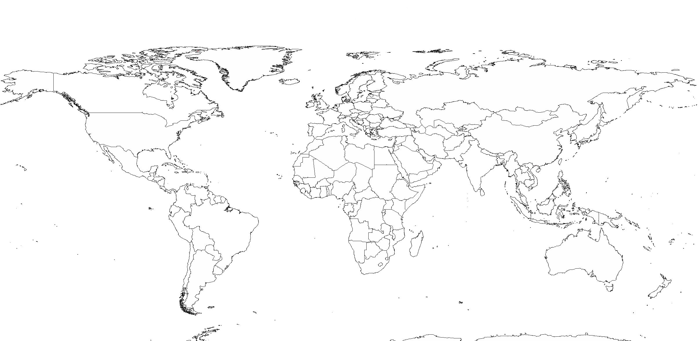

The Frugal Innovation Lab develops accessible, affordable, adaptable, and appropriate technologies, products and solutions to address human needs in emerging markets.
Global Frugal Innovation

Renewable Energy
Energy Made in Uganda
Dynamic Poverty Heat Map
QuikChill
Emergency Power for Hospitals in Under-Developed Countries
MUVE
Design of Methane-to-Methanol Conversion Device
Fuel-Cell Project
Greenmission: An Off-Grid Energy System
Manual Charging Phone Case
Pb: Project Battery—A Portable In-Home Power System
Shrouded Small Wind Turbine
Smart Water Heater Controller
Solar Powered Absorption Chiller
Clean Water
Lab on a Chip
Electrochemical Detection of Arsenic
Arsenic Detection Project: Electronics
Design and Evaluation of a Home-Scale Arsenic Removal System
Electrochemical Detection of Arsenic Using a Microfluidic Sensing Platform
Life Water
Paper-Based Water Analyzer
Rainwater Catchment System at Walden West Outdoor Science School
Mobile For Humanity
Mobile Forum for Education
salaUno CATRA
FACE (Fair-Trade Aid Calculator for Everyone)
Get Me There
Seed Bank Tracking in Nicaragua
NetHope and SCU Mobile Health Interoperability Research
Mobile Platform for Vocal Pattern Analysis
eRescue
StreetConnect
IhaveIneed
Educating about Homelessness
Energy Profile for Mobile Usage
Hack for the Homeless Event
Mobile Health Solution for Under-Served Young Women
Mobile Security
NVIDIA Cuda Lab
StreetConnect II
StreetPhone (LowPower Phones)
Stress-Reliever for High-Risk Families
TextTETEA - A mobile education service
Tree Mapping
Volunteer Connection
Community Projects
Community Projects
Community Projects ENGR 110
Livelihood Development
App for Artisans
Poverty Crusher
Text to Learn
Other Interdisciplinary
AkaBot: 3D Printing Filament Extruder
Beacon Pack
Citizen Tree Mapping
Engineers without Borders
Luminant Display
Tech Museum Innovation Workshops of 2014
3D Printing Committee
Public Health
Fertile Days Ahead
Hearing Aid
Hearing Loss Detector (Mobile Audiometry Application)
Mobile Cooler for the Last Mile Distribution of Vaccines in Developing Nations